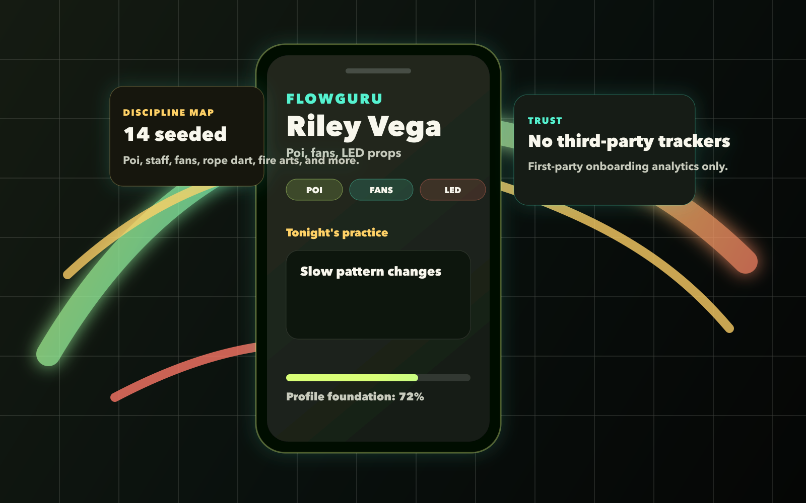

Show the props, styles, and goals that make your flow yours.
Early profiles support display name, bio, location, disciplines, skill level, goals, and profile photo setup when media storage is configured.
Private release warming up
A polished home base for flow artists before the feed, events, and marketplace arrive.
Shape your public-ready profile, track the disciplines that define your style, and turn your current skill map into practice prompts that keep the glow moving.

Campaign idea
Early profiles support display name, bio, location, disciplines, skill level, goals, and profile photo setup when media storage is configured.
Practice prompts are generated from saved profile fields, so the next session starts from your disciplines and goals instead of a blank note.
Verification, password recovery, account activity, tester feedback, and deletion-request intake are already part of the foundation.
Current product surface
These launch cards mirror the real foundation in the repo today. Feeds, events, marketplace, payments, and reputation systems are not active yet.
LED poi, fans, contact staff
Warm up with 4 slow pattern changes. Film the cleanest one, then write the cue that made it click.
First-party analytics only. No ad pixels, heatmaps, session replay, or cross-site tracking in the current foundation.
Built for the actual circle
Open with your disciplines, skill level, and current goal already written down.
Turn a fresh goal into a short prompt before the details drift away.
Early testers can report friction directly from the product and help shape the launch path.
Release prep
Ask for launch updates, support the test cohort, or use the public support and privacy pages for review.